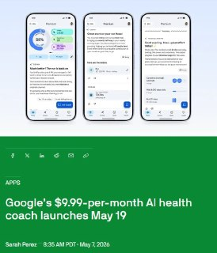
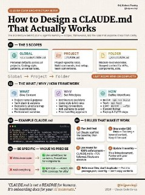
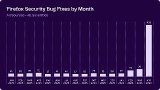
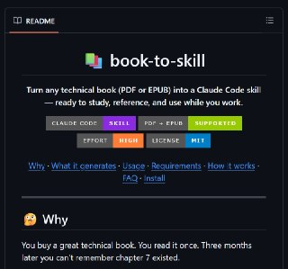
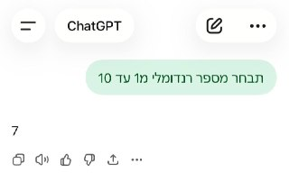

WIREDנמוכה10.05.2026, 00:00
Messages between Shivon Zilis and Tesla executives reveal plans in 2017 to start a rival AI lab, potentially led by Altman or Demis Hassabis.
אימות 1
Messages between Shivon Zilis and Tesla executives reveal plans in 2017 to start a rival AI lab, potentially led by Altman or Demis Hassabis.

סמסונג חצתה שווי של יותר מטריליון דולר על רקע הזינוק בביקוש לשבבים ל-AI, אחרי שדיווחה על הכנסות שיא ועלייה חדה ברווח התפעולי. בכך היא הופכת לחברה השנייה באסיה שמגיעה לרף הזה, כשברקע גם דיווח על מגעים עם אפל לייצור שבבים.
לצד גל הפיטורים, חלק מחברות ההייטק משנות כיוון ומגייסות עובדים צעירים לפי כישורים ולא רק לפי ניסיון. הנגישות לכלי AI מאפשרת לסטודנטים ולבוגרים טריים לקפוץ מהר יותר לתפקידי מפתח ולעקוף את מסלול הכניסה המסורתי.
New research suggests that reliance on AI assistants can have a negative impact on people’s ability to think and problem solve.
Inworld חשפה את Realtime TTS-2, מודל המרת טקסט לדיבור שדורג ראשון ב-Artificial Analysis לפני OpenAI, Gemini ו-ElevenLabs.

גוגל פותחת ב-19 במאי את הגישה ל-Health Coach, עוזר בריאות מבוסס Gemini שיאסוף נתונים מ-Fitbit, מ-Pixel Watch ומרשומות רפואיות כדי לעקוב אחרי שינה, אימונים ותזונה ולהציע המלצות אישיות.

הטקסט מציג כמה פקודות שימושיות בקודקס: `/goal` לעבודה רציפה עד השלמת יעד, `/side` לפתיחת צ'אט צדדי עם אותו הקשר, `/fast` להאצה במחיר של יותר טוקנים, ו-`/compact` לדחיסת ההקשר וחיסכון בעלות.

שוחרר תוסף ל-VSCode שמחבר את n8n לאוטומציה מהירה של תהליכי עבודה, כולל יצירת שרשראות של סוכני AI, פעולות וקריאות לכלים.

תי עם AI ש״נחשף״ כשעוברים על התמונה עם העכבר ויצא ממש מגניב!

י אחרי זה קלוד פשוט לא עוקב. לא בכוונה, זו ההתנהגות שלו. טיפ: אפשר למקם את הקובץ הזה ב-3 מקומות שונים שיש להם תפקיד שונה: 1. כחוק כללי לכל הפרויקטים מעתה והלאה 2. כחוק לפרויקט ספציפי שמשתפים עם צוות שעובד עם git 3.
OpenAI הוסיפה לקודקס פיצ'ר של "חיות מחמד" אנימטיביות שמופיעות מעל כל האפליקציות ומציגות בזמן אמת מה קורה עם הסוכנים. אפשר לבחור אחת משמונה דמויות מוכנות או ליצור דמות מותאמת עם `/hatch`, ואז להפעיל אותה דרך הגדרות `Appearance`; לצד זה הוקם גם אתר קהילתי לשיתוף והתקנה של דמויות.

הכירו את Sci-Bot, כלי חיוני לכל סטודנט — עוזר בינה מלאכותית (AI) מדעי המבוסס על הארכיון הגדול בעולם של 85 מיליון מחקרים. 🔹 הוא עונה על כל שאלה מדעית, מצטט עבודות ומספק
אנתרופיק כנראה מפתחת עוזר פרואקטיבי חדש בשם הקוד "אורביט", שאמור לנתח בלילה שיחות ואפליקציות ולהציג בבוקר סיכומים, תובנות והצעות פעולה.

מודל Mythos של Anthropic איתר בתוך חודש 271 חולשות ב-Firefox, יותר ממה שמפתחי הדפדפן מצאו במשך כשנה וחצי, כולל באגים שאפשרו יציאה מארגז החול. בשילוב חולשות נוספות, חלקם היו עלולים לאפשר הדבקה בתוכנה זדונית בלחיצה על קישור בלבד, מה שממחיש עד כמה כלי AI כבר משנים את תחום אבטחת הסייבר.

הכלי `book-to-skill` ממיר קבצי PDF ו-EPUB ל"סקיל" ש-Claude Code יכול לעבוד איתו, עם חילוץ תוכן, סיכומי פרקים ומילון מונחים. המטרה היא לאפשר גישה ממוקדת למידע רלוונטי בלי להעמיס טוקנים על כל המסמך בבת אחת, במיוחד למחקר, לימוד ותיעוד טכני.

הכותב מספר איך שילב את קלוד אופוס 4.7 עם מודל התמונות החדש של GPT כדי ליצור קרוסלת אינסטגרם על הופ, צ'יטה מהמדבריום בבאר שבע שעברה התעללות באירלנד ומקבלת כיום טיפול אוהב בישראל.

בוטוקס, איפור ומה לא. מסכן הנסיך הניגרי הוא מאבד כל עוקץ אפשרי הפרומפט שהשתמשתי בו: Create a hairstyle analysis graphic using this portrait.

OpenAI הוסיפה ל-ChatGPT אפשרות להגדיר איש קשר לשעת חירום, שיוכל לקבל התראה אם המערכת תזהה בשיחה כוונה לפגיעה עצמית. לפי התיאור, לא יועברו אליו פרטי הצ'אט אלא רק בקשה לבדוק שהמשתמש בסדר.

כשמבקשים מצ'אט AI לבחור מספר אקראי בין 1 ל-10, הוא נוטה לעיתים קרובות לענות 7 לא כי יש לו "העדפה", אלא כי מודל שפה חוזה את הטוקן הסביר ביותר לפי דפוסים בנתוני האימון.
פרטנר לשיחה: Chat with me in English as if we are friends sitting in a coffee shop. Correct my mistakes and explain in Hebrew when necessary 3️⃣ מאמן הגייה: Give me a phonetic breakdown of the following English phrases with tips on how to speak naturally 4️⃣ אופטימיזציה של דקדוק: Explain
Coinbase מפטרת 14% מעובדיה לאחר שהטמעת AI האיצה משמעותית את קצב הפיתוח והאוטומציה בחברה, עד לרמה שבה גם צוותים לא טכניים מעלים קוד לפרודקשן.
בעל הערוץ מזכיר שהוא פתוח לשיתופי פעולה ופרסום ממומן בתחומי הטכנולוגיה וה-AI, כל עוד התוכן רלוונטי ובעל ערך לעוקבים; לפרטים אפשר לפנות אליו בפרטי.

הפוסט מציג טענת "חינם", אבל בלי אימות ברור מול המוצר הרשמי, ולכן צריך לראות בזה טענה שדורשת בדיקה.

הפוסט מציג טענת "חינם", אבל בלי אימות ברור מול המוצר הרשמי, ולכן צריך לראות בזה טענה שדורשת בדיקה.

הפוסט מציג טענת "חינם", אבל בלי אימות ברור מול המוצר הרשמי, ולכן צריך לראות בזה טענה שדורשת בדיקה.

שיאומי פתחה את MiMo V2.5 עם שתי גרסאות, Pro ורגילה, שתיהן עם חלון הקשר של מיליון טוקנים; דגם ה-310B הוא מולטי-מודאלי, מה שמרחיב את השימושים למפתחים וליישומי AI.
הניסוח הזהיר יותר הוא: לפי הדיווח, האבטלה באיראן חצתה את רף ה-50% ומעמיקה את הלחץ הכלכלי על המשטר, אך דווקא הפיצול בין הדרג המדיני למשמרות המהפכה ממשיך לבלום ויתורים מול ארה"ב.
לפי "הטלגרף", המשטר באיראן מציב בערים לוחמים זרים מעיראק ומאפגניסטן כדי לדכא מחאה פנימית, אחרי שנפגעו כוחותיו המקומיים. תושבים טוענים שהם אלימים ואכזריים יותר, במה שממחיש כיצד רשת המיליציות שבנתה טהרן משמשת כעת גם להישרדות המשטר מבית.
ביחידת אגוז מתארים כיצד שילוב של פשיטות חשאיות, מארבי צלפים ותחבולה מבצעית ניתק את חיזבאללה, פגע בציר האספקה והוביל לנפילת בינת ג'ביל.
פוטין אמר לראשונה שלדעתו המלחמה באוקראינה מתקרבת לסיום, אך הבהיר שסיום כזה יתאפשר רק אחרי הסכם שלום סופי בתנאים שרוסיה מציבה. הדברים נאמרו אחרי מצעד ניצחון מצומצם במוסקבה, ללא טנקים, ובצל שבחיו לטראמפ ולמאמצי הבית הלבן לקדם הסדרה.
אחרי פרשת ההברחות במיליונים בגדס"ר הבדואי, שבה היה מעורב גם הסמג"ד לשעבר, בצה"ל מנסים לשקם את היחידה בצעדי עומק: העתקת הגזרה, מדיניות אפס סובלנות למשמעת ומנגנון דיווח דיסקרטי למפקד.

A 39-year-old man was charged with failing to comply with a digital evidence access order plus other charges. A 41-year-old man faces charges of dealing with property proceeds of crime over $100K for allegedly transferring the cryptocurrency.
The firm reported revenues of $34 million, 60% of which are now attributed to its expansion into AI HPC. “The first quarter of 2026 was defined by execution,” said TeraWulf CEO and Chairman Paul Prager, in a statement.

London, United Kingdom, 8th May 2026, Chainwire

Two papers published this week have reignited debates about the risk posed by “Q-day” to the cryptography that underpins digital assets.

At a conference dedicated to the riskiest traders in finance, Miami's crypto scene appeared far different than during its pandemic-era boom.

עדכון קצר סביב הצהובים ניסו לשים בצד את פרשת רוני דיילה ורשמו 0:4 קליל על הפועל פ"ת. קני מילר עמד על הקווים: "היו 48 שעות קשות". רוי רביבו: "כשמאמן עוזב זה לא נעים, אבל המשכנו קדימה".